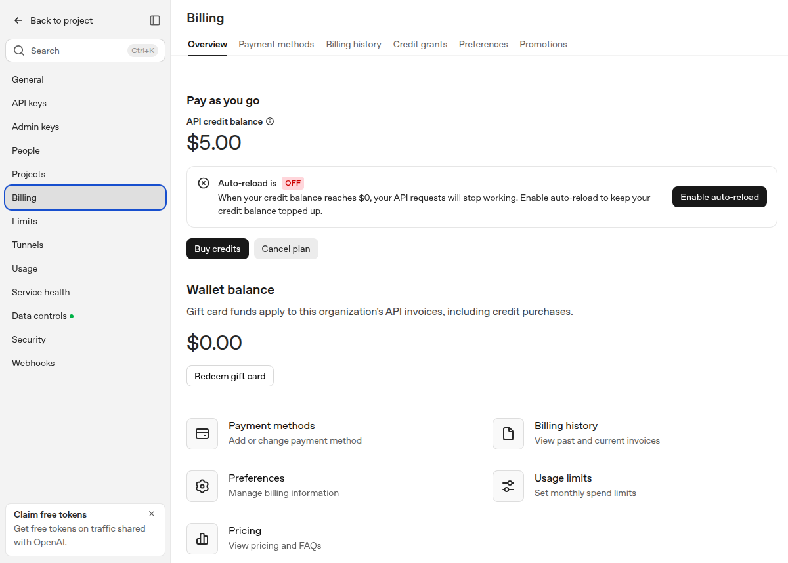

Class 10: Starting the Full-Stack Web Application
Tuesday, October 13, 2026
This section has one page for each meeting of our class this semester. Each page lists the date, the topic, and what we did, with links to the chapters that explain the material. Use it to review, or to catch up on a class you missed.
Topic: We start building the full-stack “task app” from the tutorial video. I demonstrate each step at the front of the room while you do the same steps on your own laptop, with Claude Code as your guide. You won’t finish today. Pick up where you left off at home or in our next class, as I’ll announce.
Where this fits
This project is the first of three:
- Build the app from the video (starting today). The code is already written; your job is to set up the services it depends on, run it on your computer, and put it online.
- Change it. You’ll make a significant change to the app’s database and update the app to match.
- Build your own. You’ll build an app for your own business idea from scratch, using the same architecture (Next.js, Supabase and Vercel).
The tutorial chapters, starting with Tutorial - intro and Project Architecture, explain each piece in more depth. This page is the checklist to follow. Where it differs from those chapters, follow this page: the chapters were written for an older version of these services and are being updated.
What you need: accounts and costs
| Service | What the app uses it for | Cost |
|---|---|---|
| GitHub | Stores your copy of the code | Free |
| Claude (Pro plan) | Claude Code, your guide | You already have it |
| Supabase | Database, user logins, image storage, Edge Functions | Free plan |
| Google Cloud | “Sign in with Google” | Free |
| OpenAI API | Suggests a label for each new task | About $5, prepaid (required) |
| Stripe | Subscription payments, in test mode (fake card numbers, no real money) | Free |
| Vercel | Puts the app online at the end | Free (Hobby plan) |
The OpenAI charge is the only real cost. Step E shows you how to make sure you can never spend more than the $5 you put in.
Use Google Chrome for every website in these steps. The steps were tested in Chrome (version 152, October 2026); other browsers usually work, but when something goes wrong, Chrome is one less thing to wonder about. To see your version, open Chrome’s menu ⋮ (top right), then Help > About Google Chrome. That page also installs any update; click Relaunch if it asks.
The websites change often. Supabase, Google, OpenAI, Stripe and Vercel rename buttons and move menus every few months, so a screen may not match the text or the screenshots here exactly. When that happens, look for the same words nearby, use your judgement, and if you’re stuck, take a screenshot and ask Claude Code (or another AI tool) what to click. Then tell your instructor, so the book can be fixed.
Download the setup worksheet
Keep both up to date as you go. The Excel worksheet is for a quick look: every value on one sheet, and the lines it builds for you to copy. The Word log keeps the original screenshots, so that when something goes wrong you (and your instructor) can see exactly what each screen said.
You will collect about 25 IDs, web addresses and keys from these websites. The worksheet keeps them in one place. It opens in Excel, Numbers or LibreOffice. It has three sheets:
- Start Here explains the workbook and its safety rules.
- My Info has one row per item. Fill in the yellow cells as you go through the steps below. The Example column shows what each value looks like (the examples are fake), Where to find it tells you where on the website to look, and Where you use it tells you where it goes next. Gray cells fill themselves in: for example, once you type your Supabase project ref, the worksheet builds your Supabase URL and your Google callback URL. Type
Yesin the Done? column as you finish each row. - Commands builds, from your values, the exact lines you copy: the lines of your
.env.localfile, the terminal commands with your own keys in them, the SQL for one Supabase step, and the addresses you paste into Google, Stripe, Supabase and Vercel. Until a line’s values are filled in, it says “(fill in … on My Info first)”. Copy one cell at a time, then paste it where the Where column says (pasting into a terminal is explained in Where to type commands).
Step B1 below tells you where to keep the worksheet.
Anyone with your secret keys can use your accounts, and the OpenAI key can cost you money. Keep the worksheet in the full-stack-demo-app folder, next to the task-app code folder and not inside it (Step B1), so Git can never upload it to GitHub. Don’t email it, post it, or show it while sharing your screen. Account passwords don’t go in it; keep those in your browser’s password manager.
Keep a screenshot log (required)
Besides the worksheet, keep the Word log, taskApp-setupScreenshots-v001.docx (downloaded above), next to it. It has a place for each screenshot. Put in it a screenshot of every screen where you enter or copy a setting (each form before you click Create or Save, and each page that shows an ID, an address or a key), plus every error message, with a line above each saying which step it’s from. This is required: when something doesn’t work, the log shows which setting went wrong. You hand it in as it is: don’t cover anything, not even the keys. How to keep it, and how to take a screenshot of the whole screen or of one window on Mac, Windows and Linux: Keep a screenshot log and Taking screenshots.
Your workspace: VS Code and Claude Code
As of Oct 13, 2026 · Official docs: Use Claude Code in VS Code
We’ll use VS Code, a free code editor, with the Claude Code extension. One window shows:
- the project’s files on the left, so you can open
.env.localand paste keys into it yourself; - the Claude Code panel, where you chat with Claude and see each change it proposes;
- a terminal at the bottom (Terminal > New Terminal), where you type commands such as
npm install(see the next section).
If you prefer, you can run claude in a separate terminal window next to VS Code instead. It is the same Claude Code, and both share your conversation history (Claude Code Beyond the Terminal).
Where to type commands: the terminal
A terminal is a window where you type commands instead of clicking. The program inside it that reads your commands is called a shell. In this course the shell is Bash: on Windows you get it with Git, as Git Bash. Macs use zsh by default, which works the same as Bash for every command on this page. (More in Getting Bash on Your Computer (Mac and Windows).)
How to read this page:
A gray box with a copy button in its top right corner is a command, for example:
node --versionClick into a terminal, type the command (or copy and paste it), and press Enter. Then wait until the prompt (the line ending in
%or$) comes back before you type the next command.The boxes under The prompt to start with are not commands. You paste them into Claude’s chat box.
Lines that start with
/, such as/model sonnet, are Claude Code commands. Type them in Claude’s chat box too, not in the terminal.When a step says “Claude runs” a command, Claude types it in the terminal for you after asking your permission. You don’t type it.
Ctrl+Cin a terminal stops the command that is running (for example the app’s server). It’sCtrl+Con every computer, including Macs.If Claude is running in a terminal window, that window is busy with Claude. To type a command yourself, open a second terminal (a new window or tab), or ask Claude to run the command for you.
Commands for the app itself (from Step B5 on) must run in the app’s folder,
task-app. The prompt shows which folder you’re in. If it doesn’t end intask-app, type this first:cd ~/projects/full-stack-demo-app/task-appcdmeans “change directory”: go into a folder. Aftercd, the following commands run in that folder.
You can use two kinds of terminal: your computer’s terminal app, and the terminal built into VS Code (described after these tabs). Until VS Code is installed (Step A5), use the terminal app.
- The Terminal app: press
Cmd+Space, typeTerminal, and pressEnter. The prompt ends in%, which means zsh. - VS Code’s terminal: Terminal > New Terminal. It also runs zsh.
- Paste into either one with
Cmd+V.
- The Git Bash app: open the Start menu, type
Git Bash, and pressEnter. The prompt ends in$. - VS Code’s terminal: Terminal > New Terminal, after Step A5 makes Git Bash its default. The label at the right side of the terminal panel should say bash. If it says powershell, redo the last part of Step A5.
- Paste: in VS Code’s terminal,
Ctrl+V. In the Git Bash app,Ctrl+Vdoes not paste: useShift+Insert, or right-click and choose Paste. - Don’t use PowerShell or Command Prompt for this page. Their prompts look like
PS C:\Users\sam>orC:\Users\sam>, and the commands here are written for Bash. (The one exception is installing Claude Code, in Step A3.)
- The Terminal app: press
Ctrl+Alt+T(on Ubuntu and many other versions of Linux), or search your apps for Terminal. It runs Bash. - VS Code’s terminal: Terminal > New Terminal. It also runs Bash.
- Paste into either one with
Ctrl+Shift+V. (PlainCtrl+Vdoesn’t paste in a Linux terminal.)
Reading a command
Don’t just copy commands: on this page each one is explained piece by piece, so you know what you’re asking your computer to do. Every command has the same parts. Take this one, from Step 0:
mkdir -p ~/projects/full-stack-demo-app- The first word is the command, the program to run.
mkdiris short for “make directory” (a directory is a folder). - Words that start with
-or--are options: they change how the command works.-ptellsmkdirto also make any missing folders on the way (here,projects), and not to complain if the folder already exists. - The rest are arguments: what the command works on. Here, the folder to make.
- Spaces separate the pieces. That’s why our folder and file names have no spaces in them.
~means your home folder:/Users/mariaon Maria’s Mac,/c/Users/samin Sam’s Git Bash on Windows, and/home/followed by your user name on Linux./separates folder names.~/projects/full-stack-demo-appmeans the folderfull-stack-demo-app, insideprojects, inside your home folder. That is a path: directions to a folder or file.- Capital letters matter.
task-appandTask-Appare different names.
Tip: type the first few letters of a folder or file name and press Tab. The shell finishes the name for you, with no typos.
The terminal inside VS Code
VS Code has a terminal built in, at the bottom of its window, so you can type commands right next to your files and Claude. To open one, use any of these:
- the menu Terminal > New Terminal;
- the keys
Ctrl+`(Ctrland the backtick key, usually to the left of1; it’sCtrlon every computer, including Macs). The same keys hide and show the terminal panel; - the Command Palette:
Terminal: Create New Terminal(see the next section).
It is not a different kind of terminal. It runs the same shell as your terminal app, and every command on this page works the same way in both:
VS Code’s terminal runs zsh, the same shell as the Terminal app. The prompt ends in %.
VS Code’s terminal runs Git Bash, the same as the Git Bash app, once you make Git Bash its default in Step A5. (Until then it runs PowerShell.) The label at the right side of the terminal panel says bash.
VS Code’s terminal runs Bash, the same shell as the Terminal app.
A few things to know:
- A new terminal starts in the folder that is open in VS Code. For this project that’s
full-stack-demo-app(Step B4), so typecd task-appbefore commands for the app. - The + button at the top right of the terminal panel opens another terminal, for example one for the app’s server and one for your own commands. The trash-can icon closes a terminal.
- Paste with
Cmd+Von a Mac,Ctrl+Von Windows, andCtrl+Shift+Von Linux.
VS Code’s Command Palette
The Command Palette is a search box for every command in VS Code, so you don’t have to hunt through menus. Open it with the keys for your computer:
Press Cmd+Shift+P, or choose View > Command Palette.
Press Ctrl+Shift+P, or choose View > Command Palette.
Press Ctrl+Shift+P, or choose View > Command Palette.
A box opens at the top of the window. Type a few words of what you want (for example new terminal), use the arrow keys to pick the command, and press Enter. Press Esc to close it. Commands you can use on this page:
| To do this | Type in the Command Palette |
|---|---|
Open the full-stack-demo-app folder |
File: Open Folder |
| Open a new terminal | Terminal: Create New Terminal |
| Choose which shell the terminal uses (Windows: Git Bash) | Terminal: Select Default Profile |
| Find and install extensions | Extensions: Install Extensions |
| See the Claude Code extension’s commands | Claude |
Using Claude Code without running out of usage
As of Oct 13, 2026 · Official docs: Manage costs effectively · Model configuration · Claude Fable models on your plan
The Pro plan has a usage limit that resets every five hours, plus a weekly limit. This project takes many steps, so spend your usage wisely:
- Use Sonnet. On Pro, Claude Code’s default model is Opus 5.5, which uses up your limit faster. Type
/model sonnetat the start of each session. Sonnet 5.5 handles every step of this project. - Switch to Opus only when you’re stuck. If Sonnet fails to fix the same error twice, try
/model opusfor that problem, then switch back. - Haiku (
/model haiku) is the cheapest. It’s fine for quick questions such as “what does this error mean?” - Never use Fable on the Pro plan. Fable isn’t included in Pro; it is billed separately as extra usage. Don’t turn on extra usage (usage credits).
- Keep effort at
medium(the default). Check it with/effort. - Check your usage with
/usage. It shows how much of your five-hour and weekly limits you’ve used and when they reset. - Start fresh between big steps.
/clearempties the conversation, so Claude doesn’t re-read a long history with every message. Your progress is safe inchecklist.md(see the prompt below). - Don’t paste huge error logs. Paste the last 20 or so lines, or tell Claude to look at the terminal output itself.
- Put related requests in one prompt. Instead of five messages (“do A”, then “now B”, …), send one with a numbered list: “1. … 2. … 3. …”. Claude works out the order and often does several at once. It saves usage because every message makes Claude re-read the whole conversation so far, and every answer adds to it: one message with five requests means one re-read and one answer, instead of five of each. Keep the requests related, send separately anything that depends on what you decide after seeing an earlier result, and check at the end that each one was done.
- One zoomed-out screenshot beats several. Claude reads small print well, so zoom the page out (
Ctrland-, on a MacCmdand-) until everything you want to show fits on the screen, and send one screenshot. To give Claude a picture, paste it into the prompt (Ctrl+V; on WindowsAlt+V), drag the file in, or type its path (Work with images). If the text gets so small that Claude says it can’t read it, zoom back in on that part. Never rely on a screenshot for an exact value such as a key or an ID: one misread character (lorI,0orO) breaks it, so copy the text instead (and never show Claude a secret key at all). - Read before you approve. When Claude asks permission to run a command, read what it is about to do, and usually answer plain Yes (When Claude asks permission; Permissions, Modes, and Safety).
More details are in Context, Models, Effort, and Usage in Claude Code.
The prompt to start with
Do this first, before any of the steps. Claude guides you through everything on this page, from installing the tools to putting the app online.
Open a terminal: the Terminal app on a Mac or Linux, Git Bash on Windows (see Where to type commands).
Make the project folder and go into it. Type each command and press
Enter:mkdir -p ~/projects/full-stack-demo-appcd ~/projects/full-stack-demo-appWhat the pieces mean (more in Reading a command):
mkdir -p ~/projects/full-stack-demo-app:mkdir(“make directory”) makes a folder.-palso makes the missing folderprojectson the way, and doesn’t complain if the folders already exist. The last part is the path of the folder to make.cd ~/projects/full-stack-demo-app:cd(“change directory”) goes into that folder, so the next commands run there. Your prompt now showsfull-stack-demo-app.
Start Claude Code in that folder:
claude --permission-mode manualclaudestarts Claude Code. It works in the folder you’re in, which is why youcdinto the project folder first. If you get “command not found”, install Claude Code first (Step A3 below), then come back here.--permission-mode manualstarts Claude in Manual mode: Claude asks before it runs each command or changes a file, so you see every command before it runs. The line under Claude’s chat box says manual mode on. Without this option, Claude starts in auto mode and runs most commands without asking.
See When Claude asks permission below for which answer to choose.
In Claude’s chat box, type
/model sonnetand pressEnter.Paste the prompt for your computer into Claude’s chat box and press
Enter:
I'm on a Mac.
I'm a business student with no programming background, starting my course's
full-stack web app project. We're in the folder ~/projects/full-stack-demo-app,
which I just created.
The project: get the "task app" from a tutorial video running, first on my
computer and then online. Its code is at
github.com/y-rosenthal/yr-2026-full-stack-demo, the course's updated copy of
the video's code. I'll fork it on GitHub with the name task-app and clone
it into this folder. It
uses Next.js for the web pages; Supabase for the database, login, file storage
and Edge Functions; Google for "Sign in with Google"; the OpenAI API for
automatic task labels; Stripe in test mode for payments; and Vercel to put the
app online.
My course notes list every step in order, starting with installing the tools,
with corrections to older instructions:
https://y-rosenthal.github.io/aiasd-in-progress/f26-class10-v001.html
Read them and follow their order. Assume nothing is done yet: check each step
before you skip it.
First, create two files in this folder (not inside task-app):
- CLAUDE.md, with the rules under "How to work with me" below, so you follow
them in every session.
- checklist.md, a Markdown checklist of every step and sub-step in my course
notes ("- [ ]" for each), followed by a "Notes and issues" section and a
"History" section. Update it as soon as each step is done: check its box,
add the date, and add a line to History. In "Notes and issues", record
anything I'll need to know later: problems we hit and how we fixed them,
settings that take time to take effect, things to check.
Then show me the checklist, and start with the first unchecked step.
How to work with me:
- Do one step at a time. Before each command, tell me in a sentence or two
what it does and why. Ask before anything that deletes files, changes my
accounts, or costs money.
- When a step needs a website (GitHub, Supabase, Google Cloud, OpenAI,
Stripe, Vercel) or installing a program, stop. Tell me exactly what to
click and what to copy, and wait until I say I'm done.
- I paste secret keys into files and websites myself. Never ask me to paste a
key into this chat, never print a key, never commit one to Git, and never
put one in CLAUDE.md or checklist.md. Never open my worksheet file
(taskApp-setupWorksheet-v001.xlsx) or my screenshot log
(taskApp-setupScreenshots-v001.docx): they hold my keys.
- Run commands for the app inside the task-app folder.
- Don't use Docker. We use a hosted Supabase project.
- After each step, check that it worked before moving on. If something fails,
explain the error in plain English, fix it with me, and note it in
checklist.md.
- Don't change the app's features, and don't deploy to Vercel until everything
works on my computer and I say so.
- Keep checklist.md up to date as we go, not just at the end.I'm on Windows, and I use Git Bash.
I'm a business student with no programming background, starting my course's
full-stack web app project. We're in the folder ~/projects/full-stack-demo-app,
which I just created.
The project: get the "task app" from a tutorial video running, first on my
computer and then online. Its code is at
github.com/y-rosenthal/yr-2026-full-stack-demo, the course's updated copy of
the video's code. I'll fork it on GitHub with the name task-app and clone
it into this folder. It
uses Next.js for the web pages; Supabase for the database, login, file storage
and Edge Functions; Google for "Sign in with Google"; the OpenAI API for
automatic task labels; Stripe in test mode for payments; and Vercel to put the
app online.
My course notes list every step in order, starting with installing the tools,
with corrections to older instructions:
https://y-rosenthal.github.io/aiasd-in-progress/f26-class10-v001.html
Read them and follow their order. Assume nothing is done yet: check each step
before you skip it.
First, create two files in this folder (not inside task-app):
- CLAUDE.md, with the rules under "How to work with me" below, so you follow
them in every session.
- checklist.md, a Markdown checklist of every step and sub-step in my course
notes ("- [ ]" for each), followed by a "Notes and issues" section and a
"History" section. Update it as soon as each step is done: check its box,
add the date, and add a line to History. In "Notes and issues", record
anything I'll need to know later: problems we hit and how we fixed them,
settings that take time to take effect, things to check.
Then show me the checklist, and start with the first unchecked step.
How to work with me:
- Do one step at a time. Before each command, tell me in a sentence or two
what it does and why. Ask before anything that deletes files, changes my
accounts, or costs money.
- When a step needs a website (GitHub, Supabase, Google Cloud, OpenAI,
Stripe, Vercel) or installing a program, stop. Tell me exactly what to
click and what to copy, and wait until I say I'm done.
- I paste secret keys into files and websites myself. Never ask me to paste a
key into this chat, never print a key, never commit one to Git, and never
put one in CLAUDE.md or checklist.md. Never open my worksheet file
(taskApp-setupWorksheet-v001.xlsx) or my screenshot log
(taskApp-setupScreenshots-v001.docx): they hold my keys.
- Run commands for the app inside the task-app folder.
- Don't use Docker. We use a hosted Supabase project.
- After each step, check that it worked before moving on. If something fails,
explain the error in plain English, fix it with me, and note it in
checklist.md.
- Don't change the app's features, and don't deploy to Vercel until everything
works on my computer and I say so.
- Keep checklist.md up to date as we go, not just at the end.I'm on Linux.
I'm a business student with no programming background, starting my course's
full-stack web app project. We're in the folder ~/projects/full-stack-demo-app,
which I just created.
The project: get the "task app" from a tutorial video running, first on my
computer and then online. Its code is at
github.com/y-rosenthal/yr-2026-full-stack-demo, the course's updated copy of
the video's code. I'll fork it on GitHub with the name task-app and clone
it into this folder. It
uses Next.js for the web pages; Supabase for the database, login, file storage
and Edge Functions; Google for "Sign in with Google"; the OpenAI API for
automatic task labels; Stripe in test mode for payments; and Vercel to put the
app online.
My course notes list every step in order, starting with installing the tools,
with corrections to older instructions:
https://y-rosenthal.github.io/aiasd-in-progress/f26-class10-v001.html
Read them and follow their order. Assume nothing is done yet: check each step
before you skip it.
First, create two files in this folder (not inside task-app):
- CLAUDE.md, with the rules under "How to work with me" below, so you follow
them in every session.
- checklist.md, a Markdown checklist of every step and sub-step in my course
notes ("- [ ]" for each), followed by a "Notes and issues" section and a
"History" section. Update it as soon as each step is done: check its box,
add the date, and add a line to History. In "Notes and issues", record
anything I'll need to know later: problems we hit and how we fixed them,
settings that take time to take effect, things to check.
Then show me the checklist, and start with the first unchecked step.
How to work with me:
- Do one step at a time. Before each command, tell me in a sentence or two
what it does and why. Ask before anything that deletes files, changes my
accounts, or costs money.
- When a step needs a website (GitHub, Supabase, Google Cloud, OpenAI,
Stripe, Vercel) or installing a program, stop. Tell me exactly what to
click and what to copy, and wait until I say I'm done.
- I paste secret keys into files and websites myself. Never ask me to paste a
key into this chat, never print a key, never commit one to Git, and never
put one in CLAUDE.md or checklist.md. Never open my worksheet file
(taskApp-setupWorksheet-v001.xlsx) or my screenshot log
(taskApp-setupScreenshots-v001.docx): they hold my keys.
- Run commands for the app inside the task-app folder.
- Don't use Docker. We use a hosted Supabase project.
- After each step, check that it worked before moving on. If something fails,
explain the error in plain English, fix it with me, and note it in
checklist.md.
- Don't change the app's features, and don't deploy to Vercel until everything
works on my computer and I say so.
- Keep checklist.md up to date as we go, not just at the end.Claude then reads this page, creates two files in full-stack-demo-app, shows you the checklist, and starts with Step A:
CLAUDE.mdholds the working rules. Claude Code reads it automatically at the start of every session in this folder (CLAUDE.md and Memory).checklist.mdis your running checklist and history: every step on this page with a box that Claude checks off as you finish it, plus notes about problems you hit and anything to remember. Open it any time to see where you are (in VS Code, click it in the file list).
Both files sit in full-stack-demo-app, next to the code folder, so they’re never uploaded to GitHub. Follow Claude’s instructions; the steps below are the same ones, so you can see what’s coming.
When Claude asks permission
In Manual mode, Claude stops before each command and asks “Do you want to proceed?” Read the command and Claude’s explanation, then choose an answer with the arrow keys and press Enter:
| Answer | What it does | Use it? |
|---|---|---|
| Yes | Runs this command once. Claude asks again next time. | Yes, choose this one while you’re learning. |
| Yes, and don’t ask again for: … | Runs it, and saves a rule so that the commands the prompt names (for example npm test *) run without asking, in this project, from now on. |
Only for harmless commands you’ve already approved several times. |
| Yes, and switch to auto mode | Runs it, and switches to auto mode: for the rest of the session, most commands run without asking. | No. You’d stop seeing the commands. |
| No | Doesn’t run it. You can type what Claude should do instead. | When you’re unsure; ask Claude to explain first. |
When Claude wants to create or change a file, it shows you the change and asks the same way. There, “don’t ask again” allows all file changes, but only until the session ends.
- Don’t press
Shift+Tabin Claude’s chat box. It switches to the next mode (Manual, then accept edits, then plan, then auto). If the line under the chat box no longer says manual mode on, pressShift+Tabuntil it does. - More about permissions, the modes, and the rules Claude saves: Permissions, Modes, and Safety.
Next time (a new session, after /clear, or when you switch from the terminal to VS Code’s Claude panel), start Claude in full-stack-demo-app again, type /model sonnet, and paste the prompt below. To start Claude:
- In a terminal:
cd ~/projects/full-stack-demo-app, thenclaude --permission-mode manual. Each new session in the terminal starts in auto mode unless you add--permission-mode manual. - In VS Code: open the
full-stack-demo-appfolder, click the Claude icon, and check the mode indicator at the bottom of Claude’s prompt box. If it doesn’t say Manual, click it and choose Manual. VS Code remembers that choice for your next conversations.
The prompt:
We're continuing my full-stack task app project. Read checklist.md and my
course notes at https://y-rosenthal.github.io/aiasd-in-progress/f26-class10-v001.html,
check that the finished steps still work, and continue with the next unchecked
step.The steps
With the prompt above, Claude walks you through these steps in order. It runs most commands for you, after asking your permission, and stops whenever you need to install a program or do something on a website. Each command is shown here so you can see what is happening, or type it yourself if you prefer. The notes also tell you where the older tutorial chapters are wrong.
Step A: Install the tools
You should already have a GitHub account, Git and Claude Code from earlier classes. If not, open the boxes below. Node.js and VS Code are probably new.
Go to github.com and click Sign up. Use an email address you check. See Putting Your Repository on GitHub.
Open a terminal (see Where to type commands), type this command, and press Enter:
git --versiongit is the program, and the option --version asks it to print its version number and stop. Most programs understand --version, so it’s a quick way to check whether a program is installed. If you see a version number (such as git version 2.47.1), you’re set. If not:
The Terminal app is already on your Mac. When you run git --version without Git, macOS offers to install the Command Line Tools, which include Git. Click Install, wait, and run git --version again.
Download and install Git for Windows from gitforwindows.org. It also installs Git Bash, the terminal we use.
Install Git with your system’s package manager. On Ubuntu or Debian, type this in the Terminal app (it asks for your password):
sudo apt install gitsudo runs the command as the computer’s administrator (that’s why it asks for your password). apt is the program that installs software on Ubuntu and Debian, install tells it what to do, and git is what to install.
Details, including the Git settings to set once, are in Installing and Configuring Git.
In a terminal, type this command and press Enter:
claude --versionclaude --version asks Claude Code for its version number. If you see one, you’re set. If you get “command not found” (the shell found no program named claude), install it:
In the Terminal app, type:
curl -fsSL https://claude.ai/install.sh | bashWhat the pieces mean:
curldownloads whatever is at a web address.-fsSLis four options run together:-ffail if the download fails,-ssilent (no progress bar),-Sbut still show errors,-Lfollow the address if the website redirects it.https://claude.ai/install.shis the address of Anthropic’s install script, a small program written in Bash.|(the pipe) passes whatcurldownloaded straight to the next command, instead of showing it on the screen.bashruns it. So: “download the installer and run it”.
This is the one command on this page that does not go in Git Bash. Open PowerShell (Start menu, type PowerShell, press Enter) and type:
irm https://claude.ai/install.ps1 | iexThis is the PowerShell version of the Mac and Linux command: irm (short for Invoke-RestMethod) downloads the installer from the web address, the pipe | passes it on, and iex (Invoke-Expression) runs it.
In the Terminal app, type:
curl -fsSL https://claude.ai/install.sh | bashcurl downloads the installer from the web address (-fsSL makes it quiet, stop on errors, and follow redirects), the pipe | passes it on, and bash runs it. So: “download the installer and run it”. (The Mac tab explains each piece.)
Then close the terminal, open a new one, and type claude. Sign in with your Claude Pro account, not with an API key. Details and troubleshooting: Installing Claude Code.
A4. Node.js. The app is written in JavaScript, and Node.js runs JavaScript on your computer. Installing it also installs npm, the tool that downloads the app’s building blocks (packages). To check whether you have it, open a terminal (see Where to type commands), type this command, and press Enter:
node --versionIf it prints v20 or a higher number (such as v24.10.0), skip to Step A5. If it prints “command not found”, or a lower number, install Node.js from its download page. Choose the LTS version (long-term support, the stable one):
Download the macOS Installer (.pkg), double-click it, and click through the installer.
Download the Windows Installer (.msi), double-click it, and click through the installer with its default choices.
The download page shows commands for installing Node.js on Linux (with a tool called nvm). Copy them into the Terminal app one at a time. Your system’s own package manager may offer only an old version of Node.js.
Then close the terminal and open a new one (a terminal that was already open doesn’t see the new program), and type these two commands, pressing Enter after each:
node --versionnpm --versionnode is Node.js and npm is its package manager; --version asks each one for its version number. Both should print one. More in Step 0: Install Node.js and npm.
A5. VS Code and the Claude Code extension. Download VS Code from code.visualstudio.com, then:
- Open the downloaded file, drag Visual Studio Code into your Applications folder, and open it from there (or press
Cmd+Spaceand typeVisual Studio Code). - Open the Extensions view with
Cmd+Shift+X. - Nothing else to set up: VS Code’s terminal uses zsh, like the Terminal app.
- Run the downloaded installer and keep its default choices.
- Open the Extensions view with
Ctrl+Shift+X. - Make Git Bash VS Code’s terminal: open the Command Palette (
Ctrl+Shift+P), typeTerminal: Select Default Profile, pressEnter, and choose Git Bash. Then open a new terminal (Terminal > New Terminal) and check that the label at the right of the terminal panel says bash.
- Download the .deb file (Ubuntu, Debian) or the .rpm file (Fedora, Red Hat) and open it with your software installer.
- Open the Extensions view with
Ctrl+Shift+X. - Nothing else to set up: VS Code’s terminal uses Bash.
Then, on every computer: in the Extensions view, search for Claude Code and install the one published by Anthropic. A Claude icon appears in VS Code; click it and sign in with your Claude account.
Step B: Get the code onto your computer
B1. Keep everything in one folder. You made the folder ~/projects/full-stack-demo-app when you started Claude. Everything for this project goes in it:
~/projects/full-stack-demo-app/
├── CLAUDE.md Claude's working rules (Claude writes it)
├── checklist.md your checklist and history (Claude updates it)
├── taskApp-setupWorksheet-v001.xlsx your worksheet: never in Git
└── task-app/ the code: your Git repository (Step B3)Git tracks only the files inside task-app, so it can never upload your worksheet’s keys to GitHub. Claude works in full-stack-demo-app, so it could open the worksheet; the prompt tells it never to. Don’t use Documents or Desktop for code projects: on many computers iCloud or OneDrive syncs those folders, and syncing the thousands of files in a Node.js project causes problems (see “Where to keep your projects” in Your First Repository).
Move the worksheet there from your Downloads folder. Claude can run this for you, or type it in a second terminal:
mv ~/Downloads/taskApp-setupWorksheet-v001.xlsx ~/projects/full-stack-demo-app/mv (“move”) moves a file. It takes two arguments: first the file to move (the worksheet, in the Downloads folder in your home folder), then where to put it (your project folder). The / at the end makes it clear that the destination is a folder.
If you get “No such file or directory”, your browser probably saved the file under a slightly different name (for example with (1) at the end). Move it with the mouse instead:
In Finder, open your Downloads folder and drag the worksheet into the projects > full-stack-demo-app folder in your home folder (in Finder, Go > Home opens your home folder). Open it with Excel or Numbers.
In File Explorer, open Downloads and drag the worksheet into C:\Users\YOUR-NAME\projects\full-stack-demo-app. Open it with Excel.
In the Files app, open Downloads and drag the worksheet into the projects > full-stack-demo-app folder in your home folder. Open it with LibreOffice Calc.
From now on, open the worksheet from that folder.
B2. Fork the repository. A fork is your own copy of someone else’s GitHub repository, stored in your GitHub account. You can change your fork freely; the original stays untouched. (The name comes from “a fork in the road”: the two copies start the same and then go their own ways.) Forks are explained in Sharing a Repository: Collaborators and Forks.
The course’s copy of the app is github.com/y-rosenthal/yr-2026-full-stack-demo. It is the code from the tutorial video (pixegami/task-app), updated so that it works with today’s Supabase and the other services. Fork this copy, not the video’s original.
- Sign in to GitHub and go to github.com/y-rosenthal/yr-2026-full-stack-demo.
- Click Fork (top right). On the “Create a new fork” page, change the Repository name to
task-app, then click Create fork. If GitHub says you already have a repository with that name (for example from an earlier attempt), first rename that old one: open it on GitHub, click Settings, and change its Repository name, for example totask-app-old. - You land on your fork, at
https://github.com/YOUR-USERNAME/task-app. Type your GitHub username into the worksheet’s My Info sheet.
B3. Clone your fork. Cloning downloads a copy of a GitHub repository to your computer. Claude can run these two commands for you. To type them yourself, go to your project folder in a terminal by typing this command and pressing Enter (cd means “change directory”, that is, go to a folder):
cd ~/projects/full-stack-demo-appThen, in the same terminal, run the git clone command. Copy it from the worksheet’s Commands sheet (it has your username in it), or type it with your own GitHub username in place of YOUR-USERNAME:
git clone https://github.com/YOUR-USERNAME/task-appgit clone copies a repository from GitHub to your computer: all its files and their whole history. The argument is your fork’s web address. Git makes a new folder named after the repository, so this creates the folder task-app inside full-stack-demo-app. The copy remembers where it came from, so later git push knows where to upload your changes.
B4. Open the project in VS Code. In VS Code, choose File > Open Folder (or Command Palette: File: Open Folder), choose projects/full-stack-demo-app in your home folder, and click Open (click Yes, I trust the authors if asked). Open full-stack-demo-app, not task-app: then VS Code shows your code, checklist.md and CLAUDE.md together, and Claude in VS Code reads CLAUDE.md from that folder.
B5. Install the packages. Claude runs these commands for you. To type them yourself, use VS Code’s terminal from here on (see The terminal inside VS Code): open it with Terminal > New Terminal. It starts in full-stack-demo-app, so first go into the app’s folder:
cd task-appHere cd gets just the folder’s name, not a full path starting with ~: the shell looks for task-app inside the folder you’re already in. On Windows, check that the terminal panel says bash at the right (Step A5). Then type this command and press Enter:
npm installnpm install reads the file package.json, the app’s list of the packages it needs, and downloads every one of them (and the packages they need) into a folder named node_modules. The file package-lock.json records the exact version of each package, so everyone who installs gets the same versions. It takes a minute or two. Warnings about “deprecated” packages and “vulnerabilities” are normal. Don’t run npm audit fix --force: it upgrades packages to versions this code doesn’t work with. More in Step 2: Installing the Node.js packages with npm.
B6. Optional: move to Claude in VS Code. You can keep using Claude in the terminal for the whole project. If you’d rather have Claude in VS Code, next to your files: in the terminal where Claude runs, type /exit. Then, in VS Code (with full-stack-demo-app open), click the Claude icon to open the Claude Code panel, set the mode indicator at the bottom of Claude’s prompt box to Manual, type /model sonnet, and paste the Next time prompt from The prompt to start with. Claude picks up where you left off, thanks to checklist.md.
Step C: Supabase project and the front end
Supabase gives the app a PostgreSQL database, user logins, file storage and Edge Functions (small programs that run on Supabase’s servers; see Edge Functions).
Preview the front end. Claude creates your
.env.localfile from.env.exampleand runsnpm run dev. Open http://localhost:3000 to see the home page. Login doesn’t work yet. Then stop the server: click in VS Code’s terminal and pressCtrl+C(Ctrl, notCmd, also on a Mac). (See Step 4 - Optional: Preview the Frontend.)Create the project. At supabase.com, sign up (Continue with GitHub is easiest). Supabase first asks you to create an organization: give it any name, choose the Free plan, and create it. Then click New project and fill in the form:
- GitHub (optional): skip it; don’t click Connect GitHub.
- Project name:
task-app-2026-followed by your first name in lowercase, for exampletask-app-2026-maria. You’ll use the same name for your Google Cloud project (Step D) and your OpenAI project (Step E). - Database password: click Generate a password and copy the password into the worksheet right away.
- Region: the area closest to you, for example Americas.
- Security: leave Enable Data API and Automatically expose new tables on, and turn on Enable automatic RLS.
Click Create new project. It takes a couple of minutes.
Getting back to your Supabase projectThe dashboard’s addresses are long, so don’t try to remember them. Go to supabase.com and click Dashboard at the top right (sign in first if it says Sign in). You see your projects; click yours. Or bookmark your project’s home page once you’re there; the worksheet also has the address, in the row “Your project’s dashboard”.
Inside the dashboard, hovering over a menu item shows a keyboard shortcut, such as G then A for Authentication: press
G, let go, then pressA.Screenshots: the way back to the dashboardsupabase.com when you’re signed in: Dashboard at the top right The icon menu, widened, with a shortcut shown for Authentication Screenshots: organizations and the new project formYour organizations. Each organization holds projects. 
The “Create a new project” form Record your project ref, URL and publishable key in the worksheet. The project’s home page shows its URL (with a Copy button); the ref is the part before
.supabase.co. For the key, click the API Keys card under Get connected, or go to Project Settings > API Keys. The publishable key starts withsb_publishable_; click the copy icon next to it, because the page shows only its start. (Ignore the Legacy tab: the tutorial video uses an older “anon” key from there, but this app uses the publishable key.) If a Preview box appears at the bottom right of the dashboard, close it with its ×.Screenshots: the project’s home page and the API Keys page
The project’s home page: the URL under the name, and the API Keys card under Get connected 
The API Keys page (the keys are hidden in this picture) The worksheet so far: the Supabase rowsThe instructor’s worksheet after this step. In the book, the private values are blurred; yours shows your real values. The rows marked “filled in for you” fill themselves in once you type the project ref.
The Supabase rows of the worksheet’s My Info sheet Fill in
.env.local. In VS Code’s file list, opentask-app/.env.localand replace the two values with the two.env.locallines from the worksheet’s Commands sheet. Save the file.Connect the CLI. You run the Supabase CLI with
npx supabase ....- Log in (you type this one). The login asks you questions, which Claude can’t answer, so type it yourself in VS Code’s terminal, in the
task-appfolder:npx supabase login. It says “Press Enter to open browser”. PressEnter. If no browser opens, holdCtrl(Cmdon a Mac) and click the login link it prints. The browser page shows a verification code: click Copy code, paste it into the terminal, and pressEnter. The terminal says “You are now logged in.” - Link the folder (Claude can run this one).
npx supabase link --project-ref YOUR-PROJECT-REF. If it asks for the database password, type the command yourself and paste the password from your worksheet.
Skip the README’s
supabase init: the project already has itssupabase/config.tomlfile, soinitfails. Don’t runnpx supabase start: that runs Supabase locally and needs Docker (see the deeper dive at the end). See Step 5a: Supabase CLI command.Screenshots: logging in to the Supabase CLI
The terminal, waiting for the verification code 
The browser page with the verification code 
The terminal after pasting the code - Log in (you type this one). The login asks you questions, which Claude can’t answer, so type it yourself in VS Code’s terminal, in the
Two auth settings in the Supabase dashboard. The dashboard has two menus on the left: a narrow column of icons (hold the mouse over it to see their names), and next to it a menu for the part you’re in. In the icon column, click Authentication. Then move the mouse away from the icons: the second menu, titled Authentication, appears. Under CONFIGURATION:
- Sign In / Providers, in the User Signups section: turn off Confirm email and click Save changes.
- URL Configuration: check that Site URL is
http://localhost:3000(a new project already has it). Under Redirect URLs, click Add URL, typehttp://localhost:3000/**, and click Save URLs.
Screenshots: the dashboard’s menus and the sign-in settings
The icon column, widened while the mouse is over it 
Authentication > Sign In / Providers, with Confirm email still on 
Adding the redirect URL 
URL Configuration after adding it


Every new user automatically gets a Stripe customer record. Signing up before Step F is finished fails.
Step D: Sign in with Google
“Sign in with Google” works through OAuth, a standard way for one website to let you sign in with your account at another (here, Google) without ever seeing your password. Google and Supabase use the word in many of the labels below (“OAuth client”, “Callback URL (for OAuth)”). If it’s new, read OAuth: “Log in with Google” first; it takes two minutes.
Follow Step 6: setup authentication (Google OAuth), with these corrections, since Google’s screens have changed:
At console.cloud.google.com, create a project with the same name as your Supabase project (for example
task-app-2026-maria). Click the project button at the top (next to “Google Cloud”), then New project. A yellow box may tell you how many more projects you can create; ignore it. Under the name, Google shows a Project ID; if it adds numbers to it, that’s fine. Leave Parent resource as No organization and click Create. Google takes you back to the page you were on, still in your old project (if you had one). To switch, click the bell icon (Notifications) at the top right and, under “Create Project: …”, click Select Project. Check that the project button now shows your new project’s name. Write the name in the worksheet.Screenshots: creating the project and switching to it
The New Project form 
After Create: still in the old project; the bell shows Select Project The worksheet so far: the Google rowsThe instructor’s worksheet after this step, with the email blurred. The Client ID and secret come in Step D5.

The Google rows of the worksheet’s My Info sheet Open Google Auth Platform, the part of Google Cloud that handles “Sign in with Google”. There are three ways to get there. Try the menu once: it’s how you learn where things are.
Click ☰ at the top left. Point at APIs & Services and, in the list that opens next to it, click OAuth consent screen. That’s the old name of the page; it opens Google Auth Platform.
Click ☰, point at Solutions and click All products. Google Auth Platform is in the first category, Management.
In the search box at the top, type
Google Auth Platformand click the result with that name (“OAuth configuration and credentials”). Not Identity Platform: that’s a different product.A new project shows “Google Auth Platform not configured yet”.
Getting around Google CloudGoogle Cloud has hundreds of products, so its website (the console) has more menus than Supabase’s. The parts you use:
- The project button, next to “Google Cloud” at the top left, shows which project you’re in. Everything you see and change belongs to that project. Check it whenever a page looks wrong.
- ☰ opens the main menu. A row with > opens a second list when you point at it; move the mouse straight across to that list. Recently visited lists the pages you opened last. The ☆ next to a product adds it to Favorite products at the top of the menu.
- The search box finds products, pages and documentation by name.
- The bell (Notifications) lists what Google finished doing for you, such as creating a project.
- Inside a product, a menu on the left lists its pages, and the line above the page title (for example “Google Auth Platform / Overview”) shows where you are.
The console opens on the page and project you used last, so it may look different each time you come back.
Screenshots: three ways to Google Auth Platform
☰ > APIs & Services > OAuth consent screen 
☰ > Solutions > All products 
All products: Google Auth Platform is under Management 
Searching for Google Auth Platform 
Google Auth Platform in a new project Click Get started. The form Project configuration has four parts, which you fill in one after the other with Next. Don’t click Create at the bottom until all four are done.
- App Information: App name
Task App 2026 -followed by your first name and last initial, for exampleTask App 2026 - Maria L. Google may show it to people who sign in. User support email: open the list and choose your Google address. - Audience: choose External. Internal is only for companies and schools whose Google accounts belong to an organization.
- Contact Information: enter your email address. Google uses these addresses only to tell you about changes to your project. To enter more than one, type a space after each address: it turns into a separate box. (These are not the people who may sign in to the app. You list those in the next step.)
- Finish: tick I agree to the Google API Services: User Data Policy and click Continue.
Then click Create.
- App Information: App name
Create the OAuth client, the entry that lets your app use “Sign in with Google”. Open the form Create OAuth client ID in one of two ways:
Right after the last step you’re on the Overview page. It says “You haven’t configured any OAuth clients for this project yet.” Click Create OAuth client next to it.
In the menu on the left, click Clients, then + Create client at the top of the page.
Fill in the form:
- Application type: choose Web application.
- Name: replace
Web client 1withtask-app-2026-followed by your first name and last initial, andweb client, for exampletask-app-2026-maria-l web client. Only you (and your instructor, if you share the project) see this name, in the console, but a name that says whose client it is and what it’s for helps once there are several. - Authorized JavaScript origins: click + Add URI and type
http://localhost:3000. - Authorized redirect URIs: click + Add URI and paste your Google callback URL from the worksheet (
https://YOUR-PROJECT-REF.supabase.co/auth/v1/callback). - Leave Use this client for an AI-powered agent unticked.
Then click Create.
Screenshots: creating the OAuth client
The Overview page after the last step 
The Clients page 
The application types 
The form for a web application, before filling it in Save the Client ID and secret. After Create, a window OAuth client created shows your Client ID and Client secret. Read its yellow box: once you close this window, you can never see or download the secret again. Before you click OK:
- First, take a screenshot of the window and paste it into your screenshot log. If anything goes wrong later, it’s your only copy of what the window showed.
- Then copy the Client ID and the Client secret into the worksheet. Use the copy icon next to each one; don’t retype them. In many fonts
l(small L) andI(capital i), or0(zero) andO, look the same, and one wrong character makes sign-in fail. - Click Download JSON. Your browser saves a file whose name starts with
client_secret_in your Downloads folder. Move it to yourfull-stack-demo-appfolder, next to the worksheet (not insidetask-app). It holds the secret too, so it’s a backup copy of everything in this window.
Then click OK. The blue box in the window, “OAuth access is restricted to the test users …”, is the next step.
Screenshot: the OAuth client created window
The window after Create. In this picture the ID and secret are blurred. The worksheet so far: the Google rowsThe instructor’s worksheet after this step, with the email, Client ID and secret blurred. Yours shows your real values.

The Google rows of the worksheet’s My Info sheet, all four filled in Add the test users. In the menu on the left, click Audience. The page shows:
- Publishing status: Testing. While the app is in testing, only the people on its list of test users can sign in with Google. (The Publish app button is greyed out until the Branding page is complete; this course doesn’t need it.)
- User type: External, as you chose in Step D3.
- OAuth user cap: at most 100 test users, counted over the app’s whole life (removing someone doesn’t free their place).
- Test users, with + Add users and the list, empty for now.
Click + Add users. A panel opens on the right, with the same warning about the 100-user cap, one box, and a counter (0 / 100). Type the Google address you’ll sign in to the app with, plus any other Google account you’ll test with. Type a space after each address: it turns into a separate box, and the counter goes up. Check each address before you save: a typo means that account can’t sign in. Then click Save. The addresses appear under Test users (in small letters; that doesn’t matter, because email addresses don’t care about capitals).
Screenshots: Audience and Add users
The Audience page of a new app, before adding test users 
The Add users panel Forget this step and Google blocks the sign-inAnyone who isn’t on the list gets an error from Google, and the app never hears from them. If a classmate or your instructor should try your app, add their Google address here first.
Turn on Google in Supabase. Go back to your Supabase project (see “Getting back to your Supabase project” in Step C2). In the icon menu, click Authentication; in the second menu, under CONFIGURATION, click Sign In / Providers. Scroll down to Auth Providers: the list is in alphabetical order, so Google is near the bottom. Click it. A panel opens on the right:
- Enable Sign in with Google: turn it on.
- Client IDs: paste your Client ID from the worksheet. The box takes a comma-separated list because an app can have several Google clients (web, Android, and so on); you have one.
- Client Secret (for OAuth): paste your Client secret from the worksheet.
- Leave Skip nonce checks and Allow users without an email off.
- Callback URL (for OAuth) is the address you gave Google as the redirect URI in step 4. Check that the two match.
Then click Save. Back in the list, Google now shows ENABLED. (Tip: to see a long page at once, zoom out with
Ctrland-, on a MacCmdand-;Ctrl+0orCmd+0goes back to normal size.)Your browser may fill in these two boxes with the wrong valuesIf your browser has saved passwords, it may fill in Client IDs and Client Secret on its own when the panel opens (the boxes turn light blue). The browser treats them like a user name and password and puts in something it saved for supabase.com, which is never your Google client. Before you paste, select everything in each box and delete it. If the browser offers to save a password when you click Save, say no.
Screenshots: the Google panel in Supabase, and the result
The panel before any changes. In this picture the browser had already filled in the two boxes (light blue), and the project ref in the callback URL is blurred. 
After Save: Google is ENABLED in the list of providers
Your Google app stays in Testing status: only the test users you listed in step 6 can sign in with Google. Google says changes can take from a few minutes to a few hours to take effect, so if Google sign-in fails right away, try again later.
Step E: OpenAI API key, with a $5 limit
The app sends each new task’s title and description to OpenAI and gets back one of five labels: work, personal, priority, shopping or home. It uses a small, cheap model (gpt-4o-mini): one label costs a tiny fraction of a cent, so $5 lasts far longer than this course. The steps below make sure you can’t spend more than that.
Sign up at platform.openai.com (this is the API platform; a ChatGPT subscription does not include API use). Creating your first API key requires a phone number that can receive a text message.
Buy $5 of credit. Open the settings: click your organization’s name (Personal, at the bottom left) and choose Organization settings. In the settings menu on the left, click Billing. (The main menu also has a Settings item, below Plugins; on a small screen you have to scroll the menu, or zoom out, to see it.) The Billing page shows Pay as you go, your API credit balance ($0.00 for a new account), and whether Auto-reload is on or off.
Click Buy credits (on a brand-new account the button may say Add payment details). A window Add to credit balance opens:
- Amount to add starts at 10. Change it to
5; the line below says you can enter between $5 and $495. - Payment method: your card. On a new account, click + Add payment method and enter it.
- Click Continue.
The next window, Confirm payment, shows the credit ($5.00), an Estimated tax, which depends on where you live (44 cents in the screenshot), and the Estimated total. Read the small print: “Paid credits are non-refundable and expire one year from purchase date”. Then click Confirm payment.
Afterwards, check that the Billing page says Auto-reload is OFF: “When your credit balance reaches $0, your API requests will stop working.” That’s what you want: OpenAI never charges your card again on its own. Don’t click Enable auto-reload or Cancel plan. (If a window ever offers to turn on auto-reload while you buy, leave it off.)
Screenshots: buying credit
Billing: $5.00 of credit, and Auto-reload OFF">Organization settings > Billing: $5.00 of credit, and Auto-reload OFF Add to credit balance: the amount starts at $10; change it to 5. The card’s last digits are blurred. Confirm payment: $5.00 plus estimated tax. The card’s digits and expiry are blurred. - Amount to add starts at 10. Change it to
Create a project. Click Home in the left menu. Open the project menu at the top left (it shows the current project’s name and ⌃; a new account has only Default project), click + Create project, type the same name as your Supabase project (for example
task-app-2026-maria), and click Create. Then open the project menu again and choose your new project. The top-left button should now show its name, and Home shows Get started with Add credits ticked. To fix a typo in the name later: Settings > General > Project name.If the page goes blank when you switch projectsIn October 2026 the OpenAI website had a bug: switching projects while a Settings page was open showed a blank page, and reloading went back to the old project. (The page’s address names the old project, so the new one can’t load it.) Go to Home first, then switch. OpenAI may have fixed this by the time you read it.
Screenshots: creating the projectThe project menu (an older project is also listed here) Create a new project Home of the new project Set a hard spend limit. In the left menu, click Settings, then the Limits tab (make sure the top-left button shows your new project). Under Spend it says “No spend limit set”. Click Set spend limit:
- Monthly spend limit: type
5. (The grey100in the box is only an example; it isn’t filled in.) - Turn on Enforce a hard limit. It starts off, and without it the limit only sends you an email. When you turn it on, a red box explains what it does: once the project reaches the limit, new requests “will begin failing with a 429 error”, and because enforcement isn’t instantaneous, you may go over by a small amount.
- Click Set spend limit.
The Limits tab now shows Project spend limit with a green Limit enforced badge, $0.00 / $5.00, and under Spend alerts an email alert at 100% ($5), which OpenAI added for you. If the badge says Limit not enforced (red), click Edit spend limit, turn on Enforce a hard limit, and click Save.
Screenshots: the spend limitSet spend limit, before filling it in With Enforce a hard limit turned on, a red box explains what it does The result: Limit enforced, $0.00 / $5.00 - Monthly spend limit: type
Create an API key. Check that the top-left button shows your new project, click API Keys in the left menu, then Create new secret key. Fill in the form:
- Owned by: You.
- Name: what the key is for, for example
task-app-2026-maria edge functions. If a key ever leaks, the name tells you which one to delete. - Project: your new project (not Default project).
- Expiration: choose Custom and enter the number of days from today until a little after the end of the semester. (The instructor entered 100 in late October.) Count from the day you do this step. A key that expires stops working by itself, so a forgotten key can’t be misused later. The other choices are 1 day, 7 days, 30 days and Never.
- Permissions: All.
Click Create secret key. A window Save your key shows the key (it starts with
sk-proj-) and says “you won’t be able to view it again”. First take a screenshot of it for your screenshot log, then click Copy and paste the key into the worksheet. Then click Done. The list now shows your key with its name, Active, its expiry date, and only the start and end of the key (sk-...and four characters). If you lose the key, you can’t get it back: delete it (the trash icon) and create a new one.Screenshots: the form, and the keyCreate new secret key, filled in Save your key: shown only once. In this picture the key is blurred. Give the key to your Edge Functions yourself, so the key never goes into Claude’s chat: copy the
npx supabase secrets set OPENAI_API_KEY=...line from the worksheet’s Commands sheet, paste it into VS Code’s terminal (in thetask-appfolder), and pressEnter. What the pieces mean:npx supabaseruns the Supabase CLI, as in Step C.secrets setstores a secret, a named value that your Edge Functions can read on Supabase’s servers but that never appears in your code or on GitHub.OPENAI_API_KEY=sk-proj-...is the secret’s name, then=, then its value: your key. There are no spaces around the=. The function’s code reads the key by this name.


More background in Step 7: Set Up OpenAI API (skip its instructions for Supabase secrets; use the worksheet line).
Step F: Stripe, in test mode
Stripe handles the app’s monthly “Premium” subscription. Everything here is in test mode (Stripe calls it a sandbox): no real money moves, and you pay with test card numbers.
- Sign up at dashboard.stripe.com. A new account starts in a sandbox. Do every Stripe step in the same sandbox.
- API keys: on the dashboard’s home page, or at dashboard.stripe.com/apikeys, copy the publishable key (
pk_test_...) and the secret key (sk_test_...) into the worksheet. - Product: in Product catalog, click Add product. Name it
TaskMaster Premium, choose Recurring and Monthly, enter a price (for example $10), and click Add product. Open the product, click the price, and copy its ID (price_...) into the worksheet. - Customer portal: open dashboard.stripe.com/settings/billing/portal and click Save, so the app’s “Manage subscription” button works. For class demos, set cancellations to happen immediately, so a cancelled subscription switches the app back to the free plan right away.
- Vault: in the Supabase dashboard, open SQL Editor, paste the Vault line from the worksheet’s Commands sheet, and click Run. This is SQL, the language of databases, not a terminal command:
select vault.create_secret('sk_test_...', 'stripe');calls the functioncreate_secretin Supabase’svault, with two values in quotes: your secret key and the name to store it under. It stores your Stripe secret key in Supabase Vault, an encrypted store for secrets, under the namestripe. The database uses it to create a Stripe customer for each new user. - Secrets for the Edge Functions: copy the
STRIPE_SECRET_KEYline from the worksheet’s Commands sheet, paste it into VS Code’s terminal (in thetask-appfolder), and pressEnter. Do the same with theSTRIPE_PRICE_IDline.
The webhook comes in Step H, once the functions are deployed.
Step 8: Set Up Stripe puts the price ID in .env.local, but the app never reads it from there. The price ID must be a Supabase secret named STRIPE_PRICE_ID (step 6 above), and the Vault step (step 5) is missing from that chapter.
Step G: Create the database
Claude runs this command in the terminal for you (it asks your permission first; you don’t type it):
npx supabase db pushnpx supabase runs the Supabase CLI, and db push means “send my database changes up to my Supabase project” (db for database, push for upload). It applies the project’s migrations: the files in supabase/migrations that create the tables (profiles, tasks, usage tracking), the security rules, the task-attachments storage bucket for images, and the Stripe connection. In the Supabase dashboard, Table Editor now shows the tables and Storage shows the bucket. See Step 9: Set Up Supabase Database.
Skip the manual steps in Step 10: Set Up Supabase Storage Bucket: the migration already created the bucket, and the chapter’s bucket name (task-images) is wrong.
Step H: Deploy the Edge Functions and the Stripe webhook
Claude deploys the three functions by running these commands in the terminal for you (you don’t type them). The folder names use hyphens (the older chapter, Step 11, gets them wrong):
npx supabase functions deploy create-task-with-ainpx supabase functions deploy create-stripe-sessionnpx supabase functions deploy stripe-webhook --no-verify-jwtIn each command,
functions deployuploads one Edge Function, named by the argument after it (the name of its folder insupabase/functions), to Supabase’s servers, where it runs. The option--no-verify-jwton the last one lets Stripe call the webhook function without a Supabase login. (The function checks Stripe’s signature instead.) In the dashboard, this is the switch Verify JWT with legacy secret under Edge Functions > stripe-webhook > Details; it should be off.Create the webhook in Stripe. A webhook is a web address that Stripe calls to tell your app that something happened, such as “this customer paid”. Open dashboard.stripe.com/webhooks and click Create an event destination:
- Events from: Your account.
- Payload style: Snapshot. Stripe suggests “Thin”, but this app’s code only understands Snapshot events.
- Events:
checkout.session.completedandcustomer.subscription.deleted(the two the code handles; the README also listscustomer.subscription.updated, which does no harm). - Destination type: Webhook endpoint.
- Endpoint URL: your Stripe webhook URL from the worksheet (
https://YOUR-PROJECT-REF.supabase.co/functions/v1/stripe-webhook).
On the destination’s page, click Reveal next to the signing secret (
whsec_...) and copy it into the worksheet. Then copy the worksheet’sSTRIPE_WEBHOOK_SECRETline, paste it into VS Code’s terminal (in thetask-appfolder), and pressEnter.
Stripe may show an event as delivered even when the app rejected it (the function always answers “OK”). If an upgrade doesn’t show up in the app, look at the stripe-webhook logs in the Supabase dashboard under Edge Functions.
Step I: Try the app
Claude starts the app by running npm run dev in the terminal. (To start it yourself, type npm run dev in VS Code’s terminal, in the task-app folder, and press Enter; stop it with Ctrl+C.) npm run runs a script listed in package.json, and dev is the script that starts Next.js’s development server: a web server on your own computer, at the address localhost:3000 (localhost means “this computer”, and 3000 is the port, a numbered door on your computer that the server listens at). It keeps running, and updates the page when the code changes, until you stop it. At http://localhost:3000:
- Sign up with an email and password, or sign in with Google.
- Create a task. After a moment, an AI label appears.
- Open the task and attach an image.
- On your profile page, upgrade to Premium. Pay with the test card
4242 4242 4242 4242, any future expiration date (such as 12/34), and any three-digit CVC. Your plan changes to Premium. - Click the button to manage your subscription, and look at Stripe’s customer portal.
If something fails, tell Claude exactly what you clicked and what you saw. Claude can read the server output in the terminal, and the Edge Function logs are in the Supabase dashboard under Edge Functions. See Step 12: Run the Application.
If creating a task or upgrading fails, open the function’s logs in the Supabase dashboard (Edge Functions) and show Claude what they say. One known fix, which Claude can make with you: for an “Invalid JWT” (401) error, turn off Verify JWT with legacy secret for that function (Edge Functions > the function > Details). This is safe here: the functions check the user’s login themselves.
Step J: Save your work to GitHub
Ask Claude to commit your changes and push them to your fork, or do it yourself: type each of these commands in VS Code’s terminal, in the task-app folder, pressing Enter after each one. First:
git statusgit status lists the files you changed or added since your last commit, and changes nothing. Make sure .env.local is not in the list: it holds your keys, and the project’s .gitignore file tells Git to ignore it. Then:
git add -Agit commit -m "Set up the task app"git pushWhat they do:
git add -Achooses which changes go into your next commit:addstages changes, and-A(all) includes every changed, new and deleted file.git commit -m "Set up the task app"saves those changes as a commit, a snapshot in your project’s history.-mgives the commit its message, in quotes; write one that says what you did.git pushuploads your new commits to your fork on GitHub.
Step K: Put the app online with Vercel
Only after everything works on your computer.
- At vercel.com, sign up with Continue with GitHub (the free Hobby plan).
- Add New > Project, and import your
task-apprepository. - Before you deploy, open Environment Variables and add
NEXT_PUBLIC_SUPABASE_URLandNEXT_PUBLIC_SUPABASE_PUBLISHABLE_KEYwith the values from the worksheet. Don’t add any secret keys. Without the URL the build fails. If you add or change a variable later, redeploy: changes apply only to new deployments. - Click Deploy. When it finishes, copy your app’s address (
https://....vercel.app) into the worksheet. - In Supabase, Authentication > URL Configuration: change Site URL to your Vercel address and add the redirect URL
https://YOUR-APP.vercel.app/**(keep the localhost one). - In Google Cloud, add your Vercel address to the client’s Authorized JavaScript origins. The redirect URI stays the Supabase callback URL, and Stripe needs no changes.
From now on, every git push to your fork makes Vercel deploy the new version automatically. See Step 13: Deploy to Production and Hosting and Deployment.
Optional: Run the automated tests
The project includes integration tests: programs that sign up test users, create tasks and check the subscription logic against your real Supabase project. To run them, create .env.test.local (in the task-app folder) with the six lines from the worksheet’s Commands sheet, then type npm test in VS Code’s terminal (in the task-app folder) and press Enter. (npm test runs the test script in package.json, which runs the tests with a testing tool named Jest.) The tests need your Supabase secret key, which bypasses all security rules: put it only in .env.test.local. See Step 15: Automated Testing and Troubleshooting.
Where Docker fits
You don’t need Docker for this project, but you’ll hear about it.
Docker packages a program together with everything it needs (the right versions of its language, libraries and settings) into a container that runs the same way on any computer. A container image is the packaged program; a container is a running copy of it (Hosting and Deployment introduces the idea).
In this project, everything that runs on a server runs on someone else’s computers: Supabase hosts the database and Edge Functions, and Vercel hosts the website. That is why you don’t need Docker.
Professional teams often also run a complete copy of Supabase on their own laptops, to experiment without touching the real project. The Supabase CLI does this with npx supabase start, which downloads Supabase’s container images and runs them in Docker: a local database, local logins, local storage, and a local dashboard at http://localhost:54323. To try it:
Install Docker Desktop for Mac from docker.com and start it.
Install Docker Desktop for Windows from docker.com and start it. It may ask you to turn on WSL 2, a Windows feature it needs.
Install Docker Engine with your system’s package manager (see docs.docker.com), or Docker Desktop for Linux.
Then type npx supabase start in VS Code’s terminal, in the task-app folder (start starts the local copy of Supabase; npx supabase stop stops it). Docker needs a fairly recent computer and several GB of disk space, which is why it isn’t required in this course. Docker Desktop is free for personal and educational use.
If you don’t finish today
That’s expected. Continue at home, or in our next class if I say so. Start a new Claude session with the “Next time” prompt above. If you run out of Claude usage, /usage shows when your limit resets.